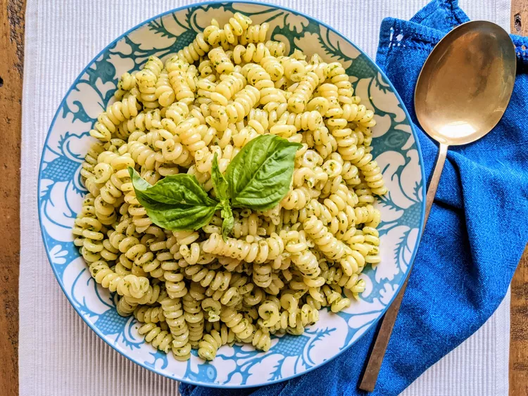

Pesto Pasta Recipe

Ingredents
- 1 (16 ounce) package pasta
- 2 tablespoons olive oil
- ½ cup chopped onion
- 2 ½ tablespoons pesto
- salt to taste
- ground black pepper to taste
- 2 tablespoons grated Parmesan cheese
Pesto Pasta Ingredients Extra Information
You'll find a detailed ingredient list and step-by-step instructions in the recipe below, but let's go over the
basics:
- Pasta: Start with your favorite pasta shape.
- Onion and oil: Cook the onion in olive oil until it's translucent.
- Pesto: Use store-bought or homemade pesto sauce.
- Seasonings: This pesto pasta is simply seasoned with salt and pepper.
- Cheese: Grate your own Parmesan cheese instead of using the pre-shredded stuff.
Directions
- Fill a large pot with lightly salted water and bring to a rolling boil. Stir in pasta and return to a boil.
Cook pasta uncovered, stirring occasionally, until tender yet firm to the bite, about 8 to 10 minutes.
Drain and transfer into a large bowl.
- Meanwhile, heat oil in a frying pan over medium-low heat. Add onion; cook and stir until softened, about 3
minutes. Stir in pesto, salt, and pepper until warmed through.
- Add pesto mixture to hot pasta; stir in grated cheese and toss well to coat.